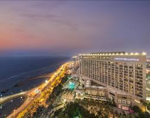
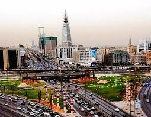

عن المملكه
-
كلية التربيةأنشئت الكلية سنة 1406 هـ، وكان يطلق عليها الكلية المتوسطة وكانت تمنح درجة الدبلوم، وبدأت العمل بها في الفصل الدراسي 1407-1408هـ لتشارك باقي الكليات المتوسطة لرفع مستوى إعداد وتأهيل المعلم في المملكة العربية السعودية بصفة عامة، ومعلم المرحلة الابتدائية بصفة خاصة، ثم تغير مسماها إلى كلية المعلمين سنة 1409 هـ، وأصبحت تمنح شهادة البكالوريوس وكانت تضم الأقسام العلمية والأدبية، إلى أن تم إعادة هيكلة الكلية بعد أن انضمت للجامعة في العام الجامعي 1428/1429هـ،وتغير مسماها في عام 1430 هـ ليصبح "كلية التربية والآداب جامعة تبوك". ويقع حرم كلية التربية والآداب شطر الطلاب في المدينة الجامعية التي تقدر مساحتها ب 12 مليون متر مربع ، وهو حرم الجامعة قيد الإنشاء، ويقع حرم كلية التربية والآداب شطر الطالبات في حي المصيف في مدينة تبوك. الأقسام الأكاديمية الحالية تضم كلية التربية والآداب شطر الطلاب في جامعة تبوك حاليا ثمانية أقسام أكاديمية تعمل على تحقيق رؤية ورسالة الكلية وتلبي حاجة الكلية من أعضاء هيئة التدريس في جميع الأقسام والتخصصات الدراسية التي توفرها الكلية وهي قسم الدراسات الإسلامية . قسم اللغة العربية . قسم اللغات والترجمة. قسم التربية وعلم النفس. قسم التربية الخاصة . قسم الإدارة والتخطيط التربوي. قسم المناهج وطرق التدريس . قسم تقنيات التعليم .
-
المدينة المنورةلمدينة المنورة يلقبها المسلمون "طيبة الطيبة" أول عاصمة في تاريخ الإسلام، وثاني أقدس الأماكن لدى المسلمين بعد مكة. هي عاصمة منطقة المدينة المنورة الواقعة على أرض الحجاز التاريخية غرب المملكة العربية السعودية ، تبعد المدينة المنورة حوالي 400 كم عن مكة المكرمة في الاتجاه الشمالي الشرقي،[1] وعلى بعد حوالي 150 كم شرق البحر الأحمر، وأقرب الموانئ لها هو ميناء ينبع والذي يقع في الجهة الغربية الجنوبية منها ويبعد عنها 220 كم،[1] تبلغ مساحة المدينة المنورة حوالي 589 كم² [2] منها 99 كم² تشغلها المنطقة العمرانية، أما باقي المساحة فهي خارج المنطقة العمرانية، وتتكون من جبال ووديان ومنحدرات سيول وأراض صحراوية وأخرى زراعية ومقابر وأجزاء من شبكة الطرق السريعة.[2]
-
جدةالتاريخيةجدة هي مدينة سعودية، تقع في منطقة مكة المكرمة غرب المملكة العربية السعودية، تبعد عن مدينة جازان 700 كم شمالا و عن مدينة ينبع 300 كم جنوبا تلقب بعروس البحر الأحمر وتعد العاصمة الاقتصادية والسياحية للمملكة العربية السعودية، وتعتبر بأنها الوجهة الأولى في المملكة للسائح سواءً من داخل المملكة أو خارجها، وتعد الأولى من حيث مشاريع الأبراج وناطحات السحاب. يبلغ عدد سكانها حوالي 3.456.259 نسمة، تعتبر جدة ثاني أكبر مدن المملكة العربية السعودية بعد العاصمة الرياض وهي أكبر مدينة في منطقة مكة المكرمة وتعتبر بوابة مكة، بها أكبر ميناء بحري على البحر الأحمر، وتعتبر مركزاً للمال والأعمال في المملكة العربية السعودية ومرفأً رئيسياً لتصدير البضائع غير النفطية ولاستيراد الاحتياجات المحلية، ويوجد في مدينة جدة ما يقارب 135 ناطحة سحاب تحت الإنشاء، كما يوجد بها مقرات للبنوك العالمية.
-
الرياضا الرياض هي عاصمة المملكة العربية السعودية وأكبر مدنها، وتقع في وسط السعودية، وهي واحدة من أسرع مدن العالم توسعاً من حيث المساحة، ومن أكبر المدن العربية من ناحية المساحة؛ إذ تبلغ مساحتها نحو (1,435 كم²). يقطن مدينة الرياض نحو من 5.25 مليون نسمة (حسب إحصائية 2010).[2] يشكلون سدس سكان المملكة العربية السعودية. وتبلغ نسبة السعوديون من اجمالي عدد السكان في الرياض نحو 68% فيما يشكل غير السعوديون ما نسبته 32%.[3] تنقسم مدينة الرياض إداريا إلى خمس عشر بلدية كما تنقسم كل بلدية بدورها إلى أحياء.